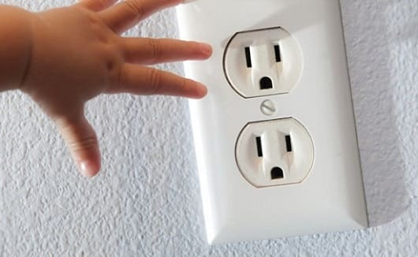

Электрический ожог часто выглядит небольшим или вообще не виден на коже, но повреждения могут захватывать обширные участки тканей под кожей. При прохождении сильного электрического тока через тело ребенка возможны поражения внутренних органов, например нарушение сердечного ритма или остановка сердца. Иногда удар электрическим током приводит к падению ребенка, что может сопровождаться переломами или другими повреждениями.
Вызывайте «Скорую помощь», если у ребенка ожог, он страдает от боли, у него наблюдаются изменения дыхания, сердечного ритма или сознания. |
В ожидании медицинской помощи предпримите следующие шаги:
1. Сначала посмотрите. Не касайтесь. Контакт с источником тока может сохраняться, и при прикосновении к пострадавшему вас тоже ударит током.
2. Выключите источник тока, если это возможно. Если нет — отодвиньте его от себя и ребенка, пользуясь предметами, сделанными из непроводящих материалов (картона, пластмассы, дерева).
3. Проверьте наличие признаков кровообращения (дыхание, кашель, движения). Если они отсутствуют, немедленно начинайте сердечно-легочную реанимацию (СЛР).
4. Предотвратите шок. Уложите ребенка так, чтобы голова находилась несколько ниже ног.
5. Закройте пораженный участок. Закрывайте любые обожженные участки кожи стерильной марлевой повязкой, если она есть под рукой, или чистой тканью. Не пользуйтесь для этого полотенцами или одеялом — их волокна могут прилипнуть к ожоговой поверхности.
Здоровье ребенка от докторов Сирс / Сирс У. и др.